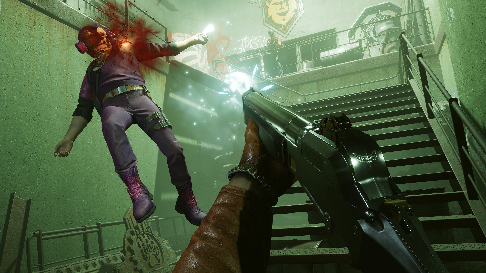

DOIS ASSASSINOS RIVAIS, UM LOOP TEMPORAL MORTAL
Em DEATHLOOP, dois assassinos rivais estão presos em um misterioso loop temporal na ilha de Blackreef, condenados a repetir o mesmo dia por toda a eternidade. Como Colt, a única chance de escapar é dar um fim ao ciclo assassinando oito alvos-chave antes que o dia seja reiniciado. Faça o que for preciso para quebrar o loop temporal.
Deathloop combina elementos tanto da série Dishonored quanto de Prey. Eles queriam ser capazes de dar ao jogador uma ampla gama de habilidades que eles pudessem selecionar para tentar completar o "loop perfeito", muitas das quais espelham poderes de Dishonored e Prey. Enquanto o jogo permite que o jogador use stealth e habilidades relacionadas como em Dishonored para se mover silenciosamente, Deathloop não permite quedas não letais de personagens não-jogáveis (NPCs), já que a Arkane reconheceu que a escolha de matar ou subjugar os inimigos pesou os jogadores em Dishonored. Essas habilidades de stealth ainda podem ser ligadas em conjunto com outras habilidades para fazer Colt lutar como John Wick, de acordo com Bakaba. A personagem Julianna tem uma gama semelhante de habilidades, muitas delas mais próximas das habilidades de Prey, como ser capaz de imitar qualquer personagem no jogo, incluindo Colt, e assim interferir em atividades como afastar o jogador do real alvo com seu mimetismo ou se passando por uma duplicata de Colt na frente de um dos alvos para causar confusão dessa forma
Enredo
Em Deathloop, o jogador assume o papel de Colt, um assassino preso em um loop temporal que foi encarregado de eliminar oito alvos chamados Visionários através da ilha antes da meia-noite, já que deixar apenas um vivo fará com que o loop temporal seja reiniciado e desfaça O trabalho dele. Além disso, caso Colt morra antes de eliminar os oito alvos, ele vai acordar no início do loop. O jogador usa uma combinação de stealth, parkour, habilidades de ataque, armas, dispositivos e poderes como nos jogos anteriores da Arkane, Dishonored e Prey, para se mover pelo mundo do jogo. Eles devem evitar ou eliminar os guardas, aprender os padrões dos alvos de Colt e descobrir a ordem certa para eliminá-los usando armas, ataques corpo a corpo ou outros meios ambientais.
O loop temporal de Deathloop não é estritamente cronometrado e tem como objetivo dar aos jogadores mais tempo e liberdade para eliminar esses oito alvos em um loop. Cada dia é dividido em quatro períodos (Manhã, Meio-dia, Tarde e Noite), e mover-se entre os quatro distritos da ilha (Updaam, Karl's Bay, Fristad Rock e The Complex) faz com que o tempo avance. As rotinas das pessoas em um determinado distrito variam dependendo da hora do dia em que o jogador entra, e as ações do jogador em um distrito podem afetar as rotinas nos outros.